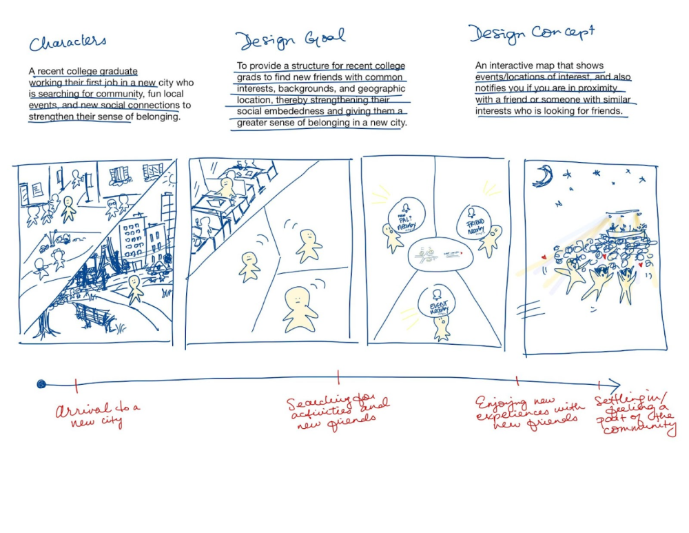

An exploratory UX project meant to address a problem through the lens of entertainment. This project was completed with a team of classmates with the intent of us learning more about the design process.
Role: UX/UI Research
Team: Tiffany Liu, Christopher Sun, Erin Fang, Ethan Ma
Tools: Tiffany Liu, Christopher Sun, Erin Fang, Ethan Ma
College graduates are not currently afforded an effective way to engage in social activities and make friends organically through shared interests and backgrounds amongst people in their new city.
An app that allows people to join groups called circles that promote activities and friendships within a certain hobby space . Additionally, this app also largely depends on its map feature , which allows users to interact with friends and events nearby based upon current location.
Interviewees:
Interview Goals:
User Pain Points
User needs
The key findings from user-research provided a jumping off point for the ways that technology could be leveraged to help recent college graduates. The team then used this research to generate storyboards to tell the struggle of post-grads and how technology could be used to support that process.
Users can choose to join “circles”, which are similar to group chat channels based on commonalities such as work and hobbies through a mobile app interface. Additionally, relevant events are suggested weekly to these circles, and users can indicate if they are going as well as see who else is interested.
Facebook messenger was used to test the functionality and engagement of the app that we wanted to prototype. We aimed to test the high priority risks of the app such as users not being able to arrange schedules to go to events together, the awkwardness of meeting a group of new people, and safety concerns. We had the users interact with messenger by asking them to join circles, choose events they wanted to check, and request new events.